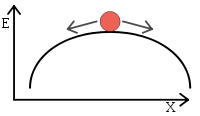

Synchrones Design
Allgemeines
Bei der Entwicklung digitaler Schaltwerke versucht man meist nach einer bestimmten Methodik vorzugehen, um bekannte Fehler ausschließen zu können. Im Folgenden werden die verschiedenen Schwierigkeiten beschrieben, die ohne Beachtung auftreten können. Anschließend wird der synchrone Schaltungsentwurf vorgestellt, der eine Methodik beschreibt, komplexe Schaltwerke deterministisch und sicher zu entwerfen und zu betreiben.
Begriffe
Setup- und Hold-Zeiten
Das Datensignal eines Datensignals muss eine bestimmte Zeit vor der Flanke am Takteingang stabil anliegen. Diese Zeit wird Setup-Zeit genannt. Weiters muss das Datensignal nach der Flanke am Takteingang eine bestimmte Zeit stabil anliegen. Dies ist die Hold-Zeit.
Wenn Setup- und Hold-Zeiten eingehalten werden, wird nach der vom Bauteil abhängigen Verzögerungszeit der Ausgang entsprechend geändert. Im Datenblatt ist diese Zeit meist als Propagationdelay bzw. %%t_{p}%% gekennzeichnet.
Ändert sich das Datensignal innerhalb der Setup- und Hold-Zeit, spricht man von einer Setup- bzw. Hold-Zeit Verletzung. Bei einer Verletzung besteht die Wahrscheinlichkeit, dass es zu einem metastabilen Zustand des Flip-Flops kommt. Dabei bleibt der Ausgang in einem Zustand zwischen logisch 0 und 1 (dem metastabilen Zustand) und wechselt nach einer undefinierbaren Zeit entweder nach logisch 0 oder 1. Dabei ist es auch möglich, dass die normale Verzögerungszeit weit überschritten wird.
Metastabilität
Ein Flip-Flop kennt zwei stabilie Zustände. Diese werden als logisch 0 bzw. logisch 1 bezeichnet, entsprechen also dem Zustand, der am Ausgang Q dargestellt wird. Wird nun durch eine Taktflanke der Zustand des Eingangs übernommen, so befindet sich das Flip-Flop wieder in einem stabilen Zustand. Das ganze System kann auch folgendermaßen dargestellt werden:

Die Kugel stellt den Zustand dar. Die logisch 0 und 1 ist der stabile Zustand links und rechts vom Hügel. Das ganze System ist labil, wenn sich die Kugel auf der Spitze des Hügels befindet. Nun ist es abhängig von zufälligen Ereignissen, wohin der Zustand des Flip-Flops kippt.
Synchrones Design
Beim synchronen Design versucht man die Schwierigkeiten, die sich durch die Metastabilität ergeben zu beheben, indem alle Flip-Flops auf einen gemeinsamen globalen Takt reagieren. Dazu wird außerdem sichergestellt, dass an den Eingängen der Speicherelementen stabile Signale anliegen, bevor die nächste Taktflanke kommt.
Als Takt wird beim synchronen Design ein periodischer Rechtecksignal mit einer festen Frequenz verwendet. Um die maximale Frequenz zu bestimmen wird der kritische Pfad zwischen den Ausgängen der Speicherelementen und dem Eingang ebendieser gesucht.
Die minimale Periodendauer (Kehrwert der maximalen Taktfrequenz) ist nun die Summe aus folgenden Zeit:
- Verzögerungszeit durch das Flip-Flop (von der Taktflanke bis zum Ausgang des Flip-Flops)
- Laufzeit durch den kritischen Pfad der Kombinatorik
- notwendige Setup Zeit der Flip-Flops
Synchronisierung von asynchronen Signalen
Da Eingänge der Schaltung in vielen Fällen nicht synchron zum globalen Takt sind, müssen diese synchronisiert werden. Wird keine Synchronisierung verwendet, kann es zur Verletzung von Setup- und Hold-Zeiten kommen und damit zu Metastabilität. Wenn bedingt durch die Metastabilität es zu einem verspäteten Stabilieseren am Ausgang des Flip-Flops kommt, so kann sich dies auf die weiteren Schaltungsteile auswirken und dort wieder zur Metastabilität und damit zu Fehlern kommen.
Zur Synchronisierung werden ein- bzw. mehrere Flip-Flops hintereinander geschaltet. Mit jeder Stufe kann die Wahrscheinlichkeit der Metastabilität vermindert werden. In der Praxis reichen meist zwei hintereinandergeschaltete Flip-Flops aus.
Schaltungsentwurf
Um einen durchgängig synchronen Entwurf zu realisieren sind einige Dinge zu beachten, die im folgenden erläutert werden.
Skew des Taktsignals
Unter Clock-Skew versteht man den maximalen Zeitunterschied in der Ankunftszeit des Taktsignals aller Speicherelemente. Im Idealfall kommt bei jedem Speicherelement die Taktflanke zum exakt gleichen Moment. Ein Clock-Skew von 10ns bedeutet also, dass es zwei Speicherelemente mit 10ns Unterschied bei der Ankunft der Taktflanke gibt.
Um den Clock-Skew zu minimieren sind folgende Punkte zu beachten:
- keine Kombinatorik in der Taktleitung
- Taktleitungen als Baumstruktur verteilen
- Buffer zur Verstärkung des Taktsignals symmetrisch in der Baumstruktur verteilen
Asynchroner Set und Reset
Alle Speicherelemente sollten nur über den synchronen Takteingang in einen neuen Zustand überführt werden. Bei der Verwendung von asynchronen Set und Reset Eingängen kann es auch wieder zur Metastabilität führen.
Fan-Out beachten
Fan-Out beschreibt das Verhältnis von Eingängen, die an einen Ausgang geschaltet werden. Dabei werden immer Gatter einer Logikfamilie verglichen. Ein Fan-Out von 10 bedeutet, dass 10 Eingänge von einem Ausgang angesteuert werden kann. Wird der Fan-Out überschritten, können die Verzögerungszeiten nicht mehr eingehalten werden, da es unter erhöhter Last länger dauert, bis sich der Logikpegel geändert hat.